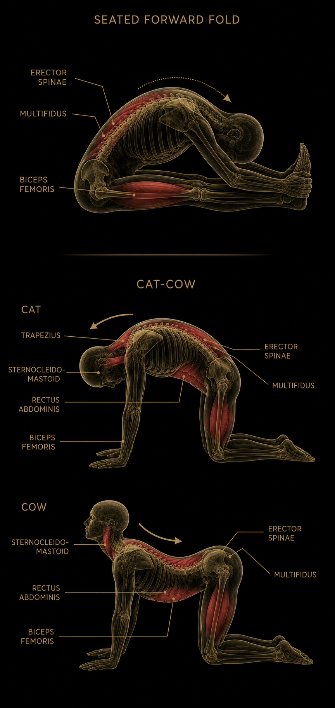
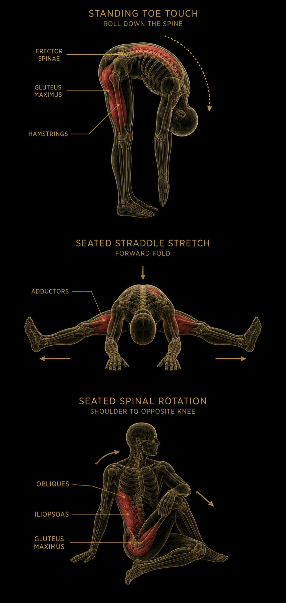
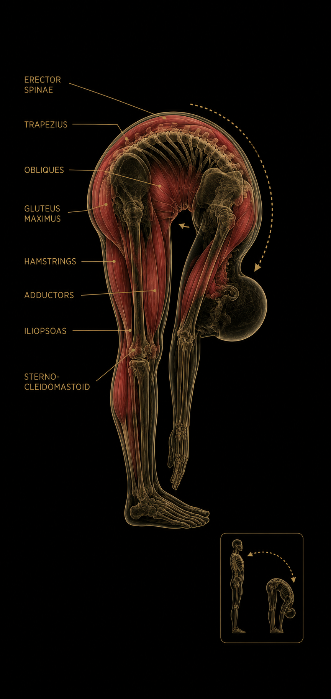

Impulsiv Diskursforstyrrelse er karakteriseret ved manglende evne til at bearbejde information, inden man reagerer på det. Det gør sig især gældende på sociale medier, hvor man kan blive fristet til at udgyde irrelevante kommentarer, der afsporer debatten. Efter mere end 20 år med sociale medier er tilstanden stadig ubehandlet hos et overraskende stort antal brugere.
Diagnostiske kriterier — mindst 2 skal være opfyldt
01Kommentaren er skrevet inden eller uden opslaget er færdiglæst.
02Kommentaren handler om noget andet end det, opslaget handler om.
03Kommentaren simplificerer en problemstilling i en skadelig grad.
04Kommentaren ville ikke være skrevet, hvis afsenderen havde sovet på det.
Prognose
De fleste, der lider af Impulsiv Diskursforstyrrelse, oplever ikke, at de har et problem — hvilket er en del af tilstanden. Symptomerne forværres i perioder med stærke følelser, lav kapacitet og politisk valgkamp.
Dette er ikke medicinsk rådgivning. Eller måske er det.
REACH-programmet
6-ugers individuelt forløb · Ingen venteliste
Du har valgt den røde pille, der fortæller dig, hvad du ægte har brug for. Du har brug for det 6 uger lange REACH-program:
RRigtig
EEffektiv
AAfledning
CGennem
HKropslig Handling
Målet er, at du efter 6 uger kan nå dit eget underliv med din mund. Dine kommentarer på sociale medier bliver automatisk blidere og mere brugbare, når du dagligt stimulerer dig selv.
Uge 1–2
Indledende øvelser

Uge 3–4
Primære øvelser

Uge 5–6
Vedligeholdelse og integration

Deltagere, der gennemfører REACH, bruger markant mindre tid på sociale medier. Årsagerne er ikke videnskabeligt underbygget, men tid væk fra skærmen og en gladere libido kan sagtens være plausible forklaringer.